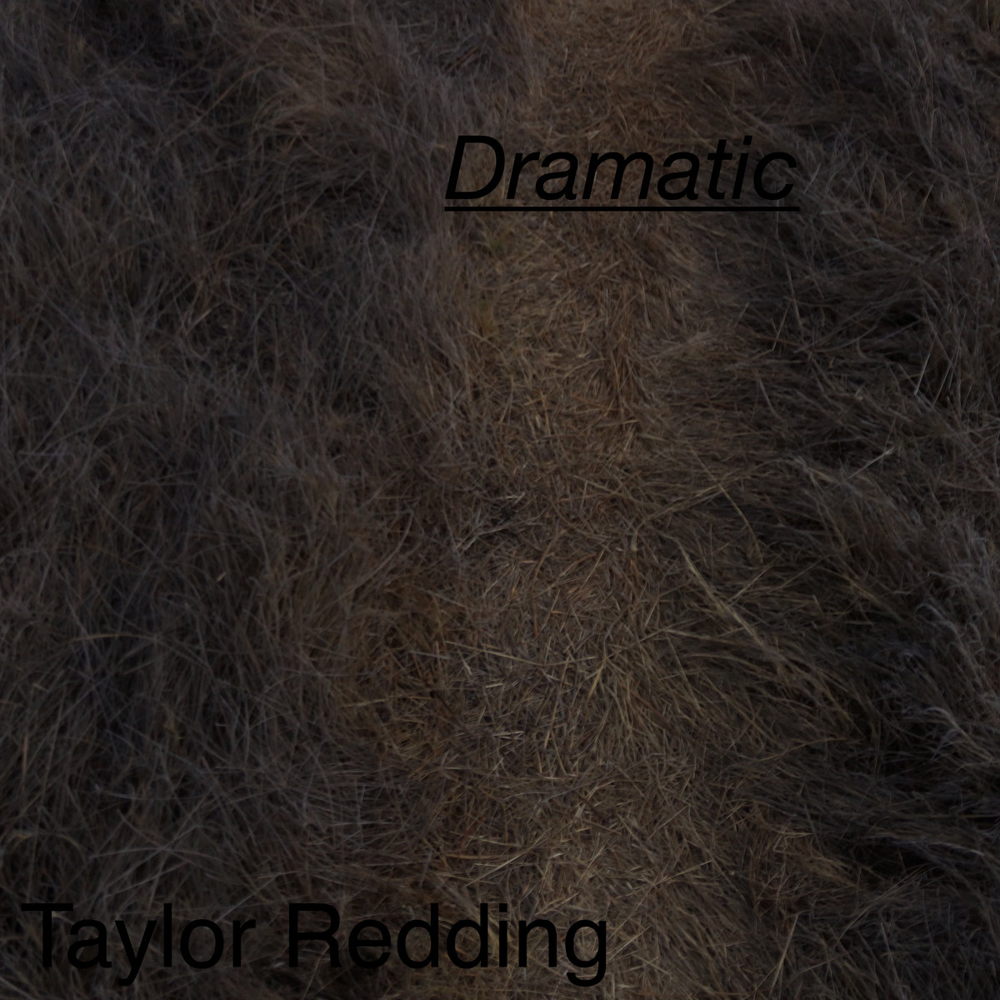
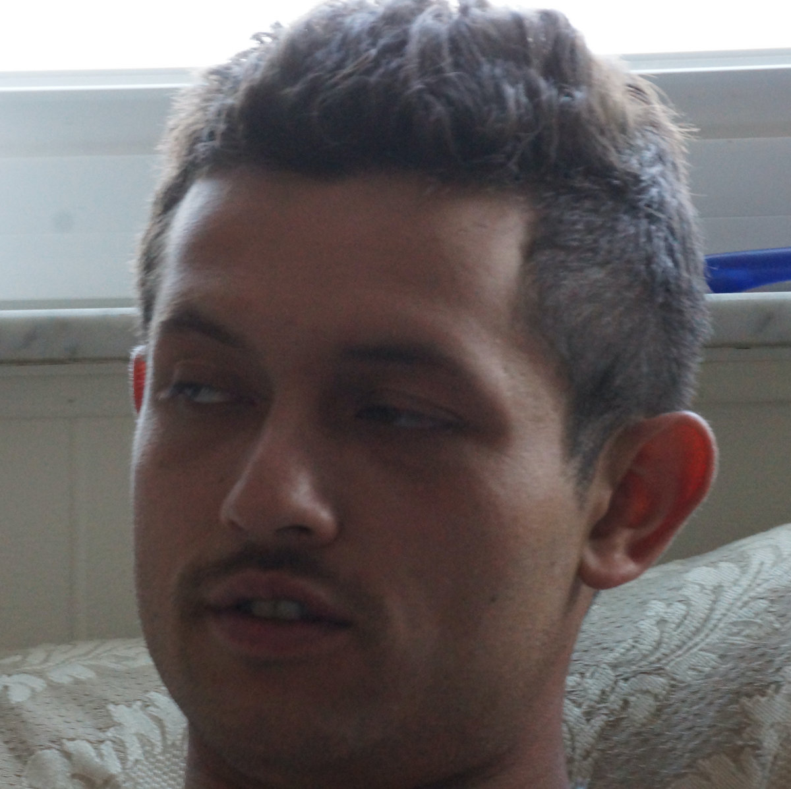

AN OPEN TAB IN THE MIND OF
Tayloredding

a little
out there.
out there.
Songs. Sounds. Things in between.
Leave the straight line for a minute.
01 / LATEST TRANSMISSIONOCTOBER 21, 2026
LET IT
EXIST.
EXIST.
3 TRACKS / 11 MINUTES, 24 SECONDS
Dramatic
Some things take their time
finding the surface.
Three slower reflections. Sound as a way of sitting with ideas, letting them linger, and making room for whatever comes next.
Get the record · name your priceTHE LISTENING ROOMDramatic / all three tracks
PRESS PLAY TO ENTER. HEADPHONES ENCOURAGED. Listen on Bandcamp
Not everything
needs to be
figured out.
MAKE SOMETHING.
LET IT LIVE.
LET IT LIVE.
02 / OTHER PLACES TO GOALL RECORDINGS
Different days.
Different frequencies.
03 / THE PERSON BEHIND THE NOISEHI, I'M TAYLOR.

Still curious.
Still making.
“trying stuff out, having fun with it, wanting to make more.”
— TAYLOR EDDING / BANDCAMP BIO
Folk, drone, dub, pop, rock. Follow a thread through the recordings, or take a wrong turn and see where it goes.
Follow the experiments on Bandcamp